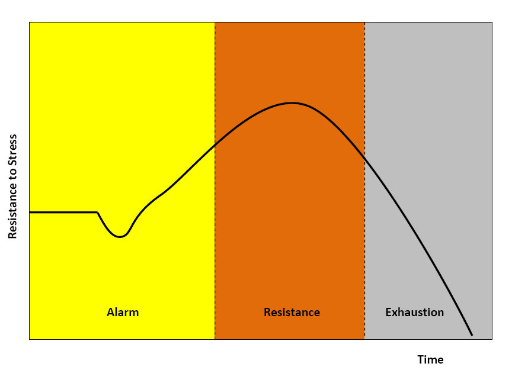

The Big Picture: Connecting Mind and Body
While people's overall health and well-being is a deep interest of all psychologists, there are more specific areas on which certain psychologists place their main focus. Health Psychology is the branch of psychology that explores factors that help people lead mentally and physically healthy lives. By exploring how biological, psychological, and sociocultural factors influence health and illness, this unit presents an opportunity to see the real-world application of course content to authentic experiences of wellness.
1.The Nature of Stress
Stress is the physiological and psychological response to demands or challenges that threaten or exceed an individual's ability to cope. The events, situations, or stimuli that trigger this response are known as Stressors.
- Eustress vs. Distress
- Stressors can be viewed in two distinct ways. Eustress is a positive form of stress that can be motivating, enhancing performance or overall well-being. (Example: The nervous excitement and adrenaline before a big performance that actually helps you focus). Distress, on the other hand, is a debilitating, negative form of stress resulting from overwhelming demands that impair functioning. (Example: The paralyzing anxiety of being severely underprepared for a major AP exam).
- Sources of Stress
- Stressors can be experienced as major traumatic events or as daily hassles that steadily build up over time. Furthermore, Adverse Childhood Experiences (ACEs) are potentially traumatic events during childhood (such as abuse, neglect, or household dysfunction) that act as significant sources of stress and can affect a person throughout their entire lifespan.
2.Stress and Physical Health
Our mental state has a profound and measurable impact on our physical bodies. Stress is a major factor in heightened susceptibility to disorders and disease.
- Hypertension: Stress has been directly linked to chronically elevated blood pressure, significantly increasing the risk of cardiovascular disease and heart attacks.
- Immune Suppression: Chronic stress causes a reduction in the activity or effectiveness of the immune system. This makes the body much more vulnerable to illness and infection, which explains why students frequently get a cold right after a highly stressful finals week.
- Additionally, prolonged stress is a common culprit behind other physiological issues such as severe tension headaches.
3.Reactions to Stress
When we encounter stressful situations, our bodies react in deeply ingrained, predictable patterns. Psychologists have identified multiple ways human beings biologically and socially react to stressors.
- General Adaptation Syndrome
- Developed by Hans Selye, this three-stage pattern describes the physiological process of experiencing stress.
- Alarm Stage
- Initially, an alarm reaction occurs when the stress is encountered. The body recognizes the stressor and activates the Fight Flight Freeze Response, an involuntary physiological reaction to a perceived threat.
- Resistance Stage
- Then, a resistance phase occurs as the stress is confronted. The body adapts to the stressor and continues to cope while remaining physiologically activated and on high alert.
- Exhaustion Stage
- Finally, an exhaustion phase occurs when the stress subsides, or the body's resources are completely spent. It is during this final phase that the greatest susceptibility to illness occurs because the body is entirely depleted.
- Tend and Befriend Theory
- Not all stress responses are strictly fight-or-flight. This theory proposes that some people react to stress by tending to their own needs or the needs of others and actively seeking connection. This phenomenon of nurturing and bonding seems to occur mostly in women.

4.Coping Strategies
When dealing with unavoidable stressors, individuals utilize different strategies to manage their emotional and physical well-being. Coping mechanisms generally fall into two broad categories.
- Problem-Focused Coping
- This strategy involves seeing stress as a problem to be solved and actively working until a solution is found. It involves directly addressing or changing the source of the stress to reduce its impact. (Example: If you are stressed about failing a math class, you hire a tutor, create a rigid study schedule, and do extra practice problems to fix the grade).
- Emotion-Focused Coping
- This strategy involves managing the emotional reactions to stress as a means of coping, rather than trying to change the stressor itself. Strategies may include deep breathing, meditation, or taking medication aimed at reducing stressful emotional responses. (Example: If you are stressed about an unavoidable two-hour flight delay at the airport, you put on headphones and listen to a calming playlist to manage your frustration, since you cannot change the flight's schedule).
5.Don't Trip Up! (Common Misconceptions)
⚠️ Problem-Focused vs. Emotion-Focused Coping: Students frequently mix these two up on the exam! Remember that Problem-Focused Coping targets the root cause of the stress (actively trying to fix the actual problem), while Emotion-Focused Coping targets the feeling of stress (making yourself feel better internally when the problem cannot be easily or immediately fixed).
6.Key Terms in This Topic
7.Practice This Topic
Test yourself on exactly what you just read. The numbers on each button show how much material is waiting for you.
The same self-check questions that close your guided notes. Find out whether stress, reactions to stress, and coping stuck.
Start Quick Check →Flip through the key terms from this topic, including the stages of the General Adaptation Syndrome and the two types of coping.
Open the deck →AP-style multiple choice on stress, the General Adaptation Syndrome, and coping strategies, with an explanation after every answer.
Take the quiz →